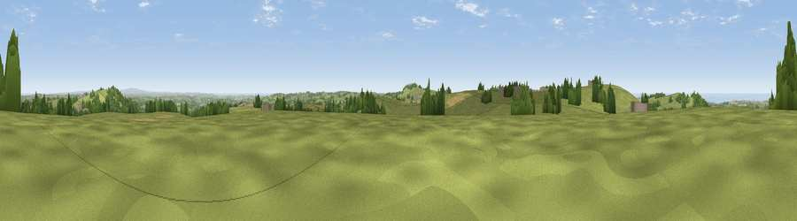

Viewpoint near Four Lanes
#10822 in England · top 23% of its area beats it · near Four LanesThe view, rendered

A 360° render of this exact spot computed from the terrain model, tree cover and land cover — summer colours, afternoon light, calibrated against photographs of famous viewpoints. Real trees, hedges and buildings will differ in detail.
The panorama
Grey silhouette: terrain skyline in each direction (720 bearings, Earth curvature and refraction included). Dashed green: skyline with trees (+15 m) and buildings (+8 m) as obstacles. Blue strip: how far the ground is visible on each bearing.
Where the view opens
Wedge length = distance to the farthest visible ground on that bearing (vegetation-aware). Rings at 10, 25 and 50 km.
What fills the view
70% grassland · 11% woodland · 8% water · 8% cropland · 2% built-up
Angular shares of the visible panorama (visual magnitude), not map area. Landscape diversity 0.43 (0–1 Shannon).
Key numbers
More beautiful places nearby
The staircase of upgrades: each row has a higher view potential than everything closer. Driving times are estimates from straight-line distance, calibrated against real road routing — check an actual route before setting out.
| Place | Direction | Drive | Score |
|---|---|---|---|
| Viewpoint near Four Lanes | W · 1 km | ~3 min | 74.3 |
| Carn Brea | NW · 2 km | ~5 min | 81.1 |
| St Agnes Beacon | N · 11 km | ~21 min | 86.1 |
| Rosewall Hill | W · 21 km | ~35 min | 88.0 |
| Viewpoint near Combe Martin | NE · 141 km | ~164 min | 88.9 |
| Holdstone Hill | NE · 142 km | ~165 min | 90.2 |
| The Knoll | ENE · 189 km | ~209 min | 91.0 |
50.21049, -5.22459 · source: screening · position refined by local search. Computed location — check access rights before visiting.